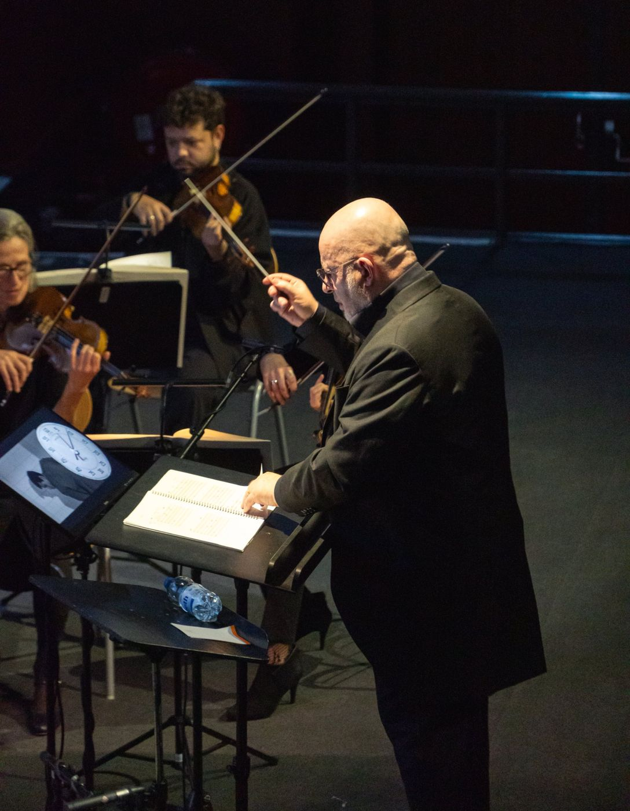
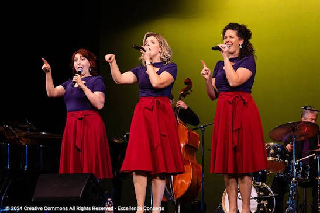
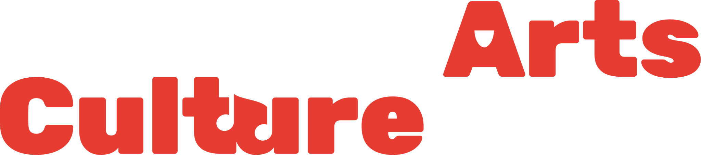

BROADWAY À STRASBOURG
Un grand concert symphonique dédié à la comédie musicale
AUDITIONS CHANT
Candidatures ouvertes jusqu’au 30 septembre 2026
PARTICIPER AUX AUDITIONS
LE PROJET
UN GRAND CONCERT SYMPHONIQUE DÉDIÉ À LA COMÉDIE MUSICALE
Orchestre, chanteurs et ensemble vocal se réunissent au Palais universitaire de Strasbourg autour d’un programme qui traverse plusieurs générations de théâtre musical, des grands classiques de Broadway aux œuvres contemporaines.




Crédits photos
NYC Light Painting — Stéphanie Van Lembergen · CC BY 3.0
My Fair Lady — Meetmeatthemuny · CC BY-SA 4.0
Company — Wikimedia Commons
BBC Symphony Orchestra — Cbusram · CC BY 4.0 · cadrage adapté
Psychose — Julian Bigg à la direction · photo Luis Calcurian · © Arts Culture Alsace
Trio de chanteuses — Excellence Concerts · Creative Commons
LE CONCERT
DES CLASSIQUES DE BROADWAY AUX COMÉDIES MUSICALES CONTEMPORAINES
WEST SIDE STORY★
WICKED★
LE FANTÔME DE L’OPÉRA★
LES MISÉRABLES★
LA PETITE SIRÈNE★
RENT★
LE BOSSU DE NOTRE-DAME★
CANDIDATURES OUVERTES
AUDITIONS CHANT
Rejoins la distribution vocale de Broadway à Strasbourg
Chanteuses et chanteurs de tous profils vocaux
Date limite de candidature : 30 septembre 2026
PARTICIPER AUX AUDITIONS Auditions sur convocation en octobre à StrasbourgUN PROJET PORTÉ PAR

Arts Culture Alsace est une association culturelle à but non lucratif fondée à Strasbourg en 2023, composée et gérée majoritairement par des étudiants
Elle crée et produit ses propres projets artistiques et accompagne également des étudiants et jeunes talents dans le développement de leurs projets
Depuis sa création, Arts Culture Alsace a notamment porté ou accompagné Destiny, Comedy’Lab, le ciné-concert Psychose, ainsi que plusieurs autres projets artistiques et culturels